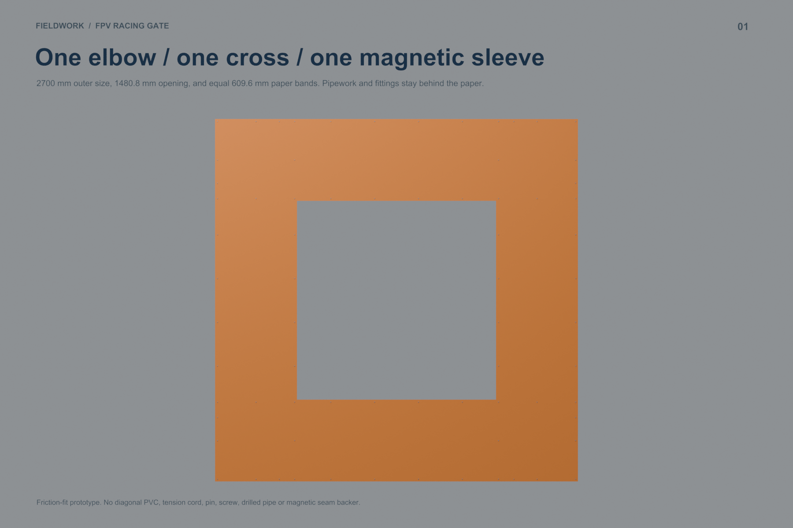
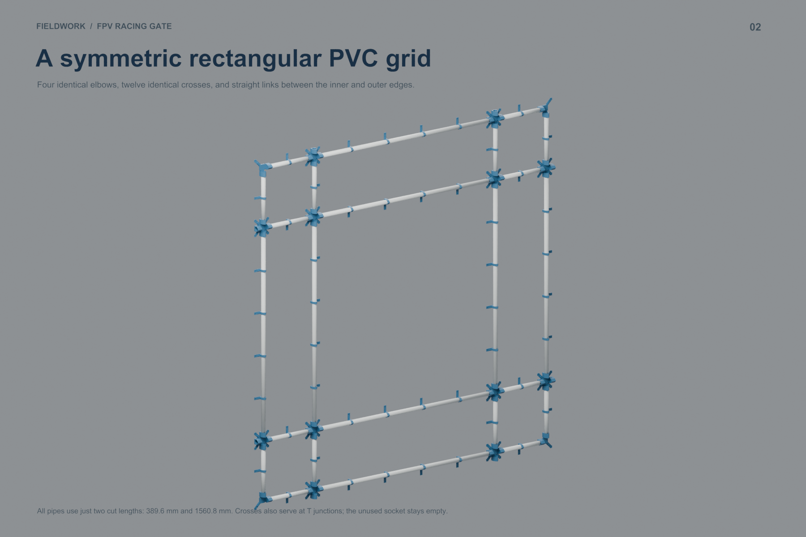
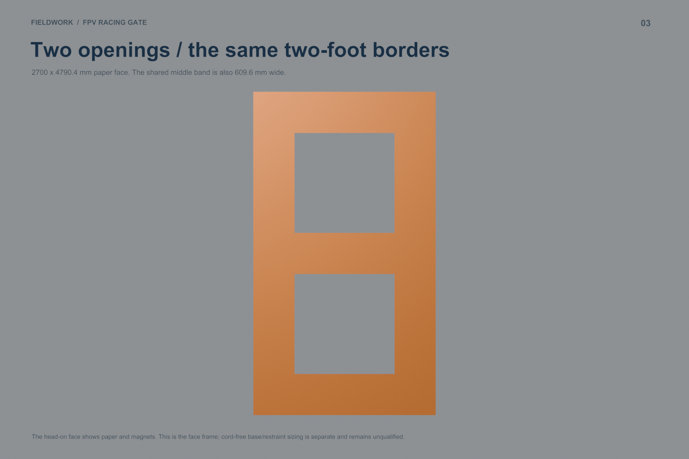
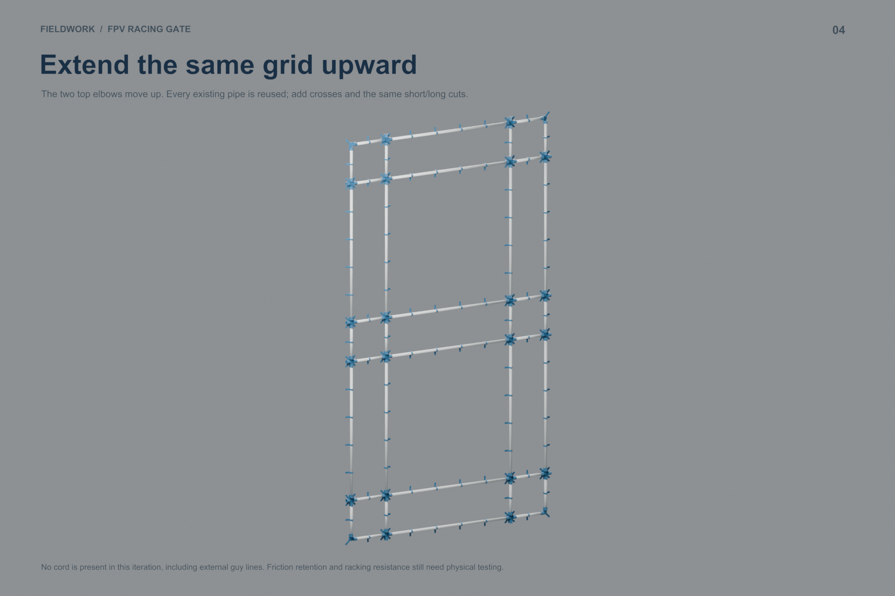
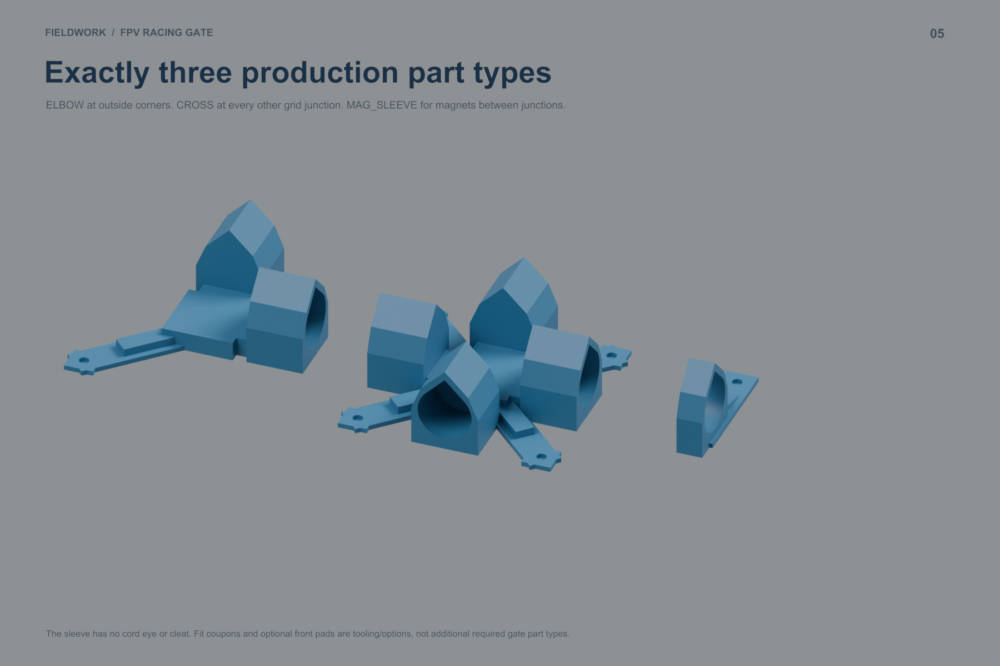
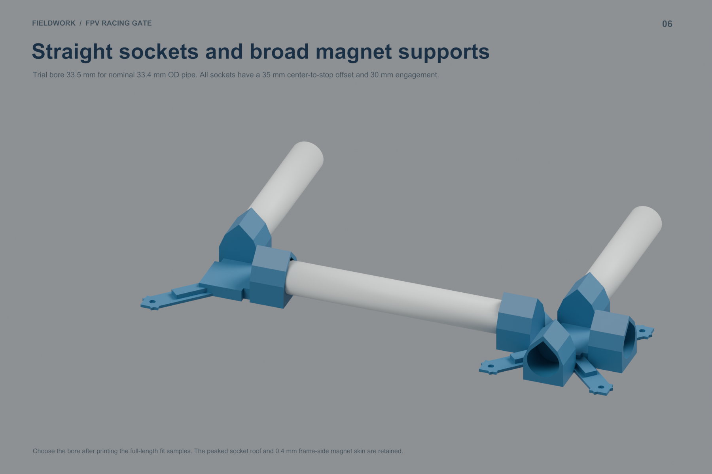
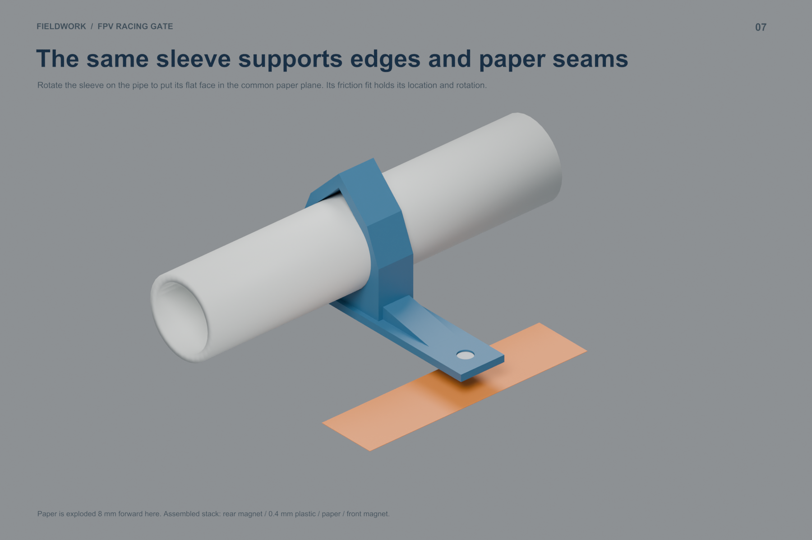
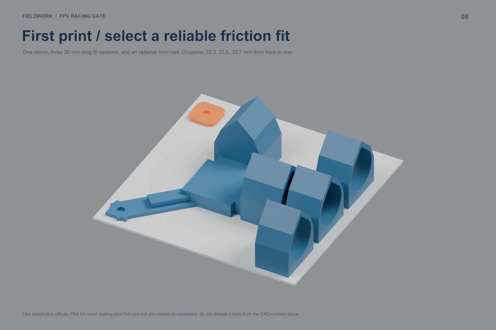
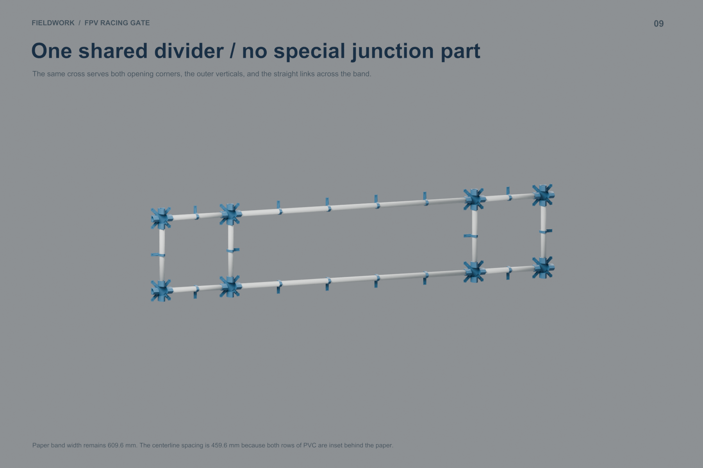

A friction-fit rectangular grid with equal 609.6 mm paper bands, extending to two stacked openings using the same three printed types.
Blender model · Assembly PDF · Full guide · Download kit
| Part | Single | Double | Print bounds mm |
|---|---|---|---|
| ELBOW | 4 | 4 | 133.314 x 133.314 x 53.345 |
| CROSS | 12 | 20 | 136.627 x 136.627 x 53.345 |
| MAG_SLEEVE | 48 | 80 | 20.0 x 86.75 x 53.345 |
| Configuration | Pieces | PETG kg | Hours | Runs | $6 PVC sticks | Subtotal* |
|---|---|---|---|---|---|---|
| single | 64 | 2.528 | 102.2 | 23 | 8 / $48 | $98.57 |
| split_s | 104 | 4.031 | 163.3 | 36 | 14 / $84 | $164.63 |
*PVC + PETG at $20/kg. Add paper, magnets, adhesive and ground support. Actual A1 Mini slice estimates; optional front pads and test tooling excluded. Simpler assembly, but more material and printer time than the preceding corded design.









Parts · Print queue · PVC cuts · Stock layout · Nodes · Sleeve positions · Magnets · Paper cuts · Assembly map · Paper map
Parts · Print queue · PVC cuts · Stock layout · Nodes · Sleeve positions · Magnets · Paper cuts · Assembly map · Paper map
Upgrade parts · Upgrade PVC · Comparison · Digital checks
All provided plates fit the A1 Mini and slice without supports or warnings. Actual friction, wear and paper grip remain to be tested. This iteration models the face frame; ground support is not yet sized for either surface. No printer job has been submitted.
{kind=link}
{kind=link}
{kind=link}
{kind=link}